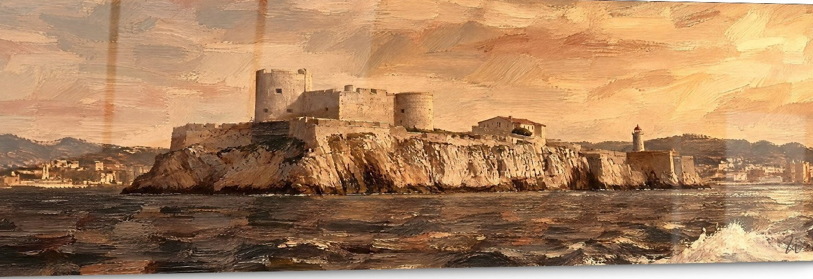
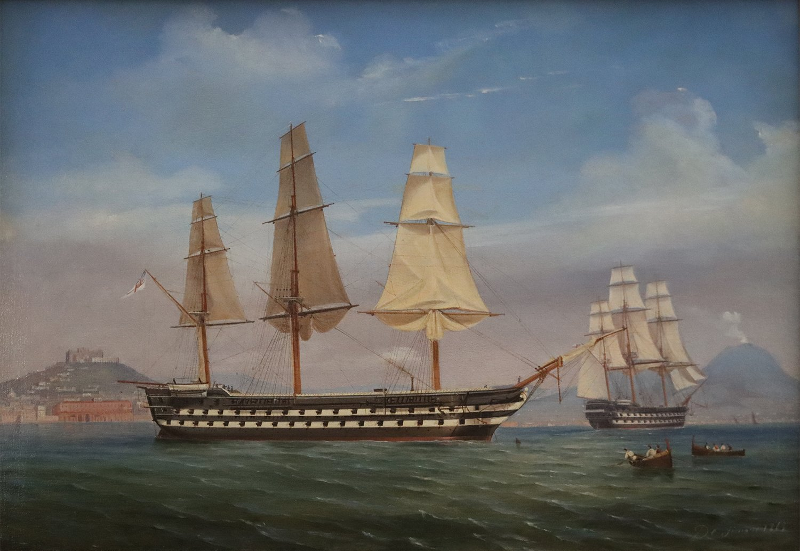
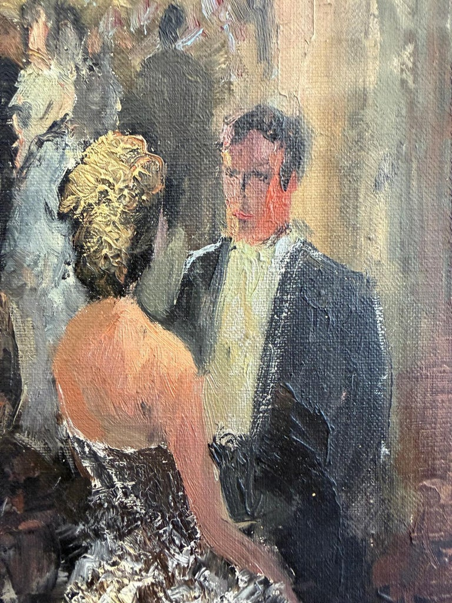
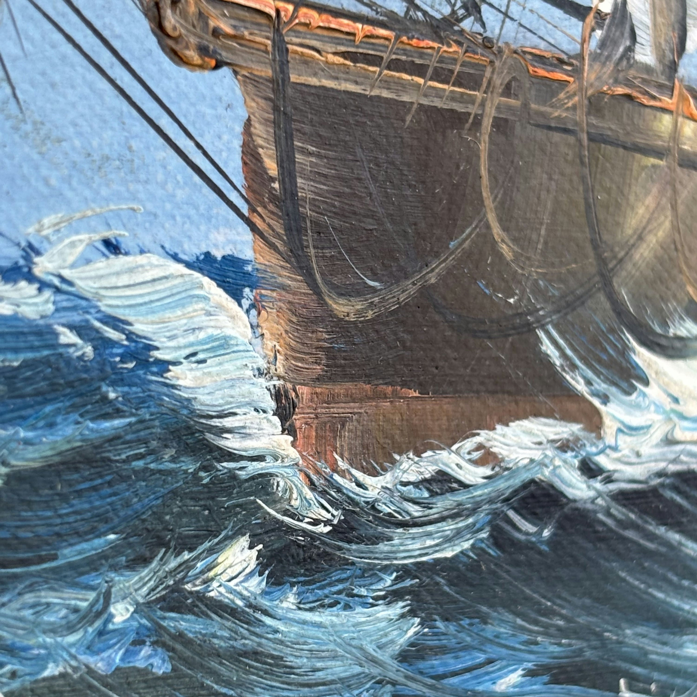
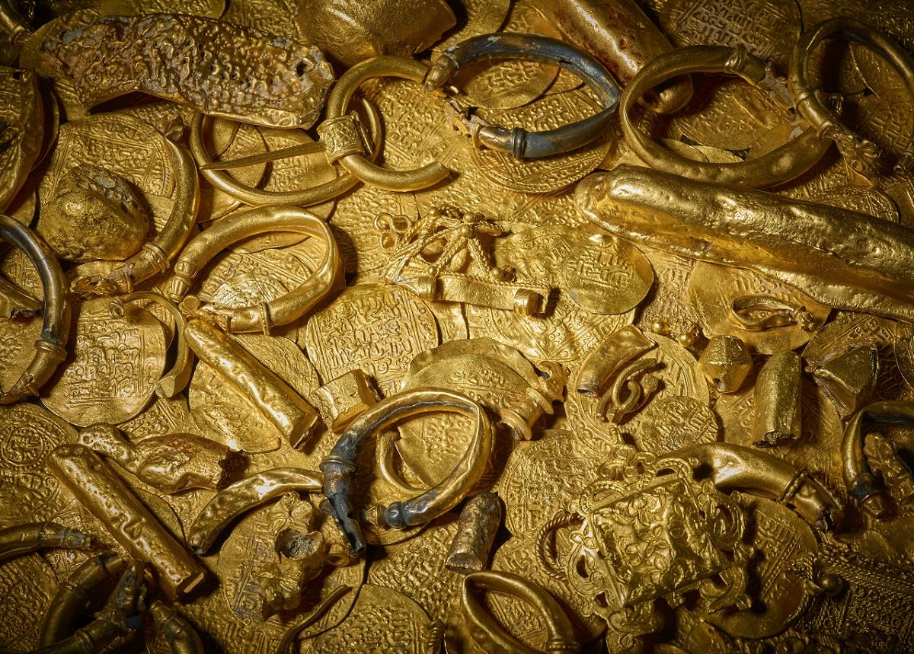
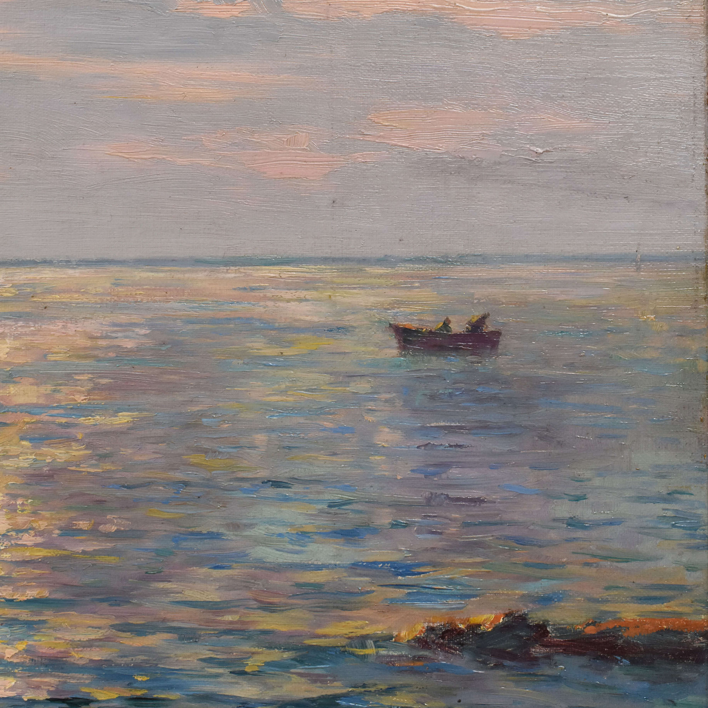

唐
爱德蒙·唐泰斯
Edmond Dantès法老号大副。从憧憬婚礼的青年水手，到俯瞰巴黎的复仇天使——他是基督山伯爵本人。
主人公LE COMTE DE MONTE-CRISTO
他含冤入狱十四载，携一座宝藏归来——
这世上所有的背叛，都将被一一清偿。
婚礼前夕，"法老号"大副爱德蒙·唐泰斯带着满船荣耀与满城祝贺驶入马赛港——他将在订婚宴上被宪兵带走，罪名纯属虚构。
嫉妒他的船务代理唐格拉尔、觊觎他未婚妻的费尔南，联手写下一封告密信；而检察官维尔福为保全父亲的前程，将这位无辜者投入了伊夫堡死牢，不经审判，不告缘由。
地牢之中，他遇见了博学的法利亚神甫。神甫教他语言、科学与一切智慧，临终留下斯帕达家族宝藏的秘密。十四年后，唐泰斯藏入裹尸袋越狱出海，在基督山岛上寻获那座足以买下整个巴黎的宝藏。
他化身为神秘莫测的基督山伯爵，重返上流社会。昔日陷害他的人如今位高权重：一个成了银行家，一个成了伯爵议员，一个成了首席检察官。而伯爵的每一枚金币、每一句话语，都是为复仇精心落下的棋子。
小说取材于巴黎警察档案中一桩真实的"皮鞋匠复仇案"，大仲马与助手马凯将其扩写成连载于《辩论报》的旷世杰作，一时间"整个巴黎都在读《基督山伯爵》"。
法老号大副。从憧憬婚礼的青年水手，到俯瞰巴黎的复仇天使——他是基督山伯爵本人。
主人公伊夫堡中的智者，被称作"疯神甫"。他授予唐泰斯学识与宝藏，也给予他第二次生命。
引路人唐泰斯的未婚妻。苦候无果后嫁作莫尔塞夫伯爵夫人，是伯爵复仇路上最锋利的疼痛。
挚爱雅尼纳总督阿里帕夏之女，被费尔南出卖为奴。伯爵救下她；最终她以爱将伯爵从仇恨中救赎。
归宿因妒生恨的告密者，靠出卖恩主发迹的莫尔塞夫伯爵。身败名裂之后，他把子弹留给了自己。
背叛者告密信的执笔人，靠他人血泪登顶的银行家。伯爵用金币筑成罗网，让他尝尽饥馑与破产。
背叛者烧毁证据、活埋真相的检察官。一生以法律之名作恶，最终在自家庭院的疯狂中审判了自己。
背叛者曾为唐泰斯奔走的船主一家。伯爵报恩于旧主之子，并让马克西米利安与瓦朗蒂娜终成眷属。
恩人法老号凯旋，马赛港张灯结彩。一纸匿名告密信，让唐泰斯在订婚宴上被宪兵带走。
蒙冤死牢的高墙之内，他与法利亚神甫相遇。神甫的智慧劈开黑暗，斯帕达宝藏的秘密在此交付。
蛰伏藏身裹尸袋投入大海，凭一叶小舟死里逃生。孤岛岩窟之中，百万金币向他敞开。
重生神秘的基督山伯爵携海黛现身巴黎上流社会。银行家、议员、检察官——猎物们尚不知死期已至。
布局唐格拉尔倾家荡产、饿殍般赎回良心；费尔南被揭穿往事，饮弹于妻儿面前；维尔福疯了，在自己的法庭里嚎叫。
复仇留在巴黎的，是马克西米利安与瓦朗蒂娜的婚约；离去的是伯爵与海黛。大海之上，他终于与自己和解。
希望
不经审判的死牢，囚住了整整十四年的光阴。

风帆满张，年轻的大副还不知道命运在前方设伏。

伯爵的每一支舞，都是精心编排的棋局。

裹尸袋沉入大海，一叶小舟载着新生靠岸。

岩窟洞开之处，百万金币映亮他的眼睛。

海天尽头，仇恨终于被轻轻放下。
人类的全部智慧，
就包含在这五个字里面：等待和希望。
Tout la sagesse humaine est dans ces deux mots : attendre et espérer !